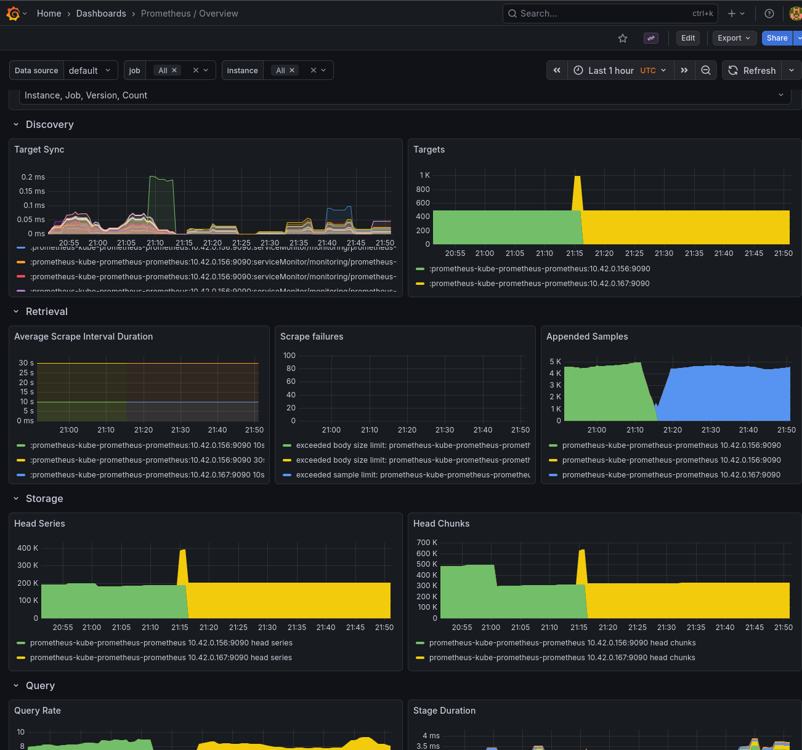
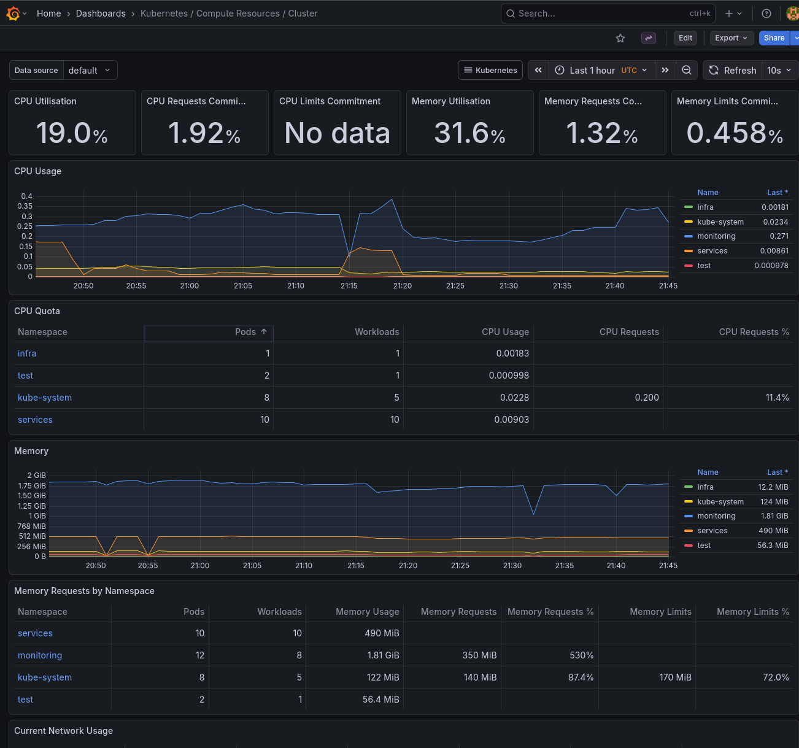
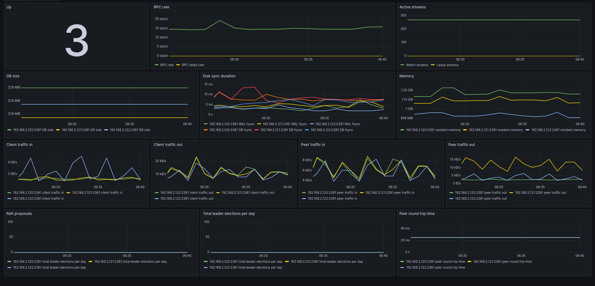
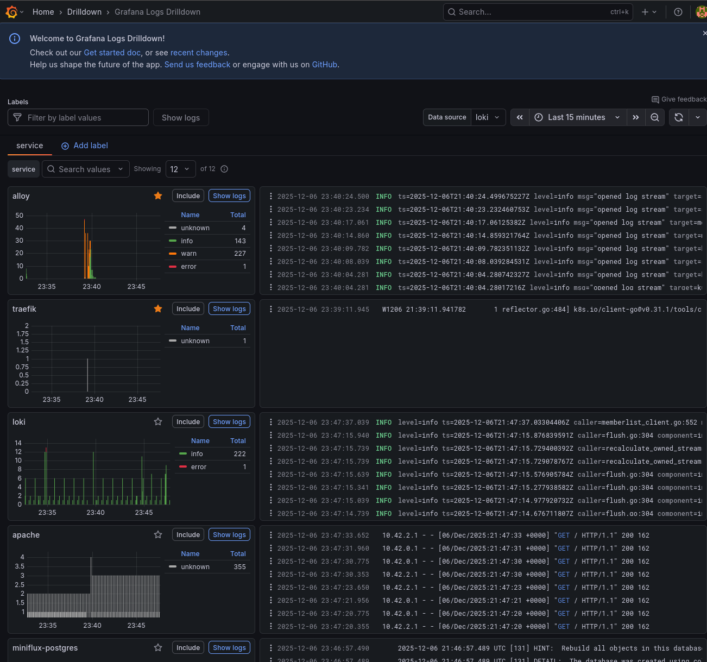
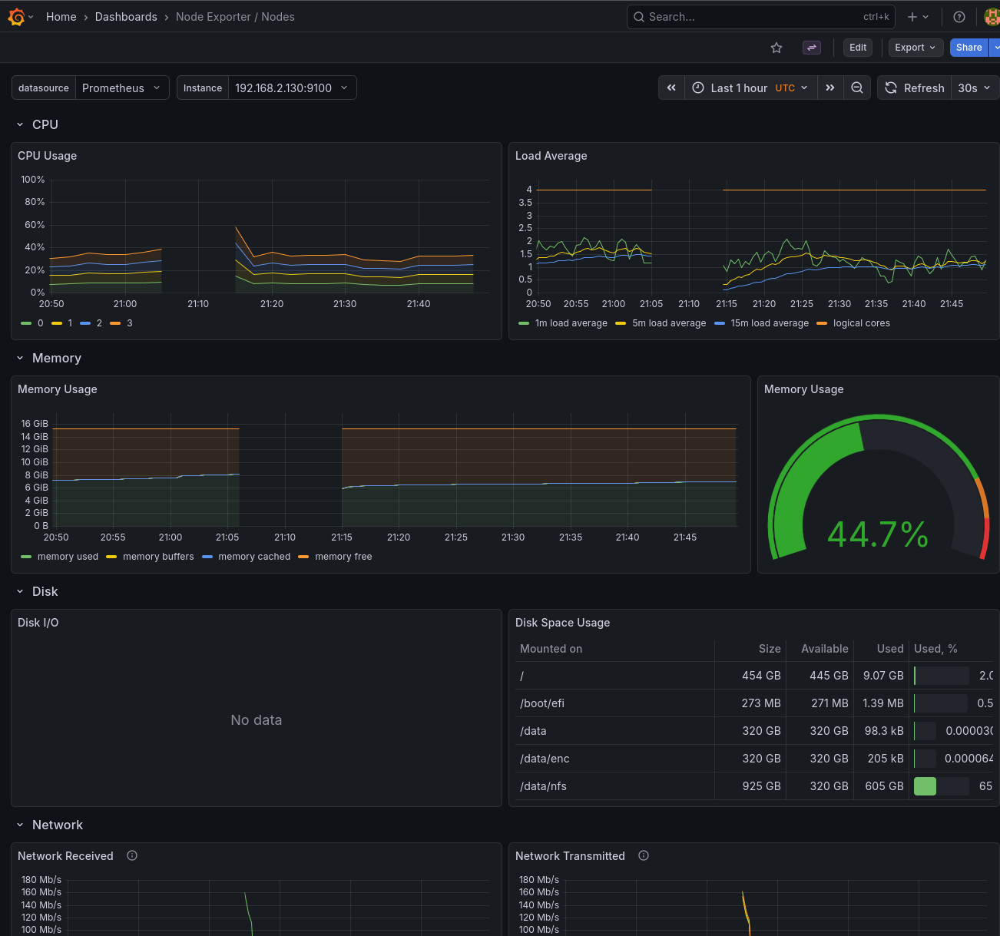
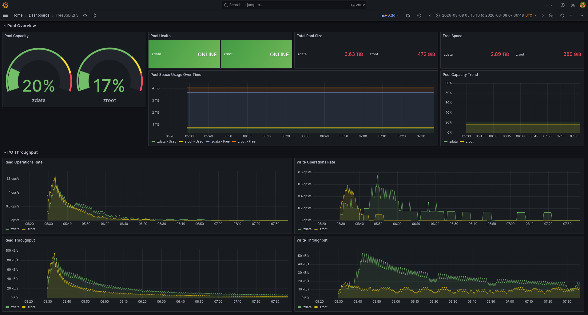
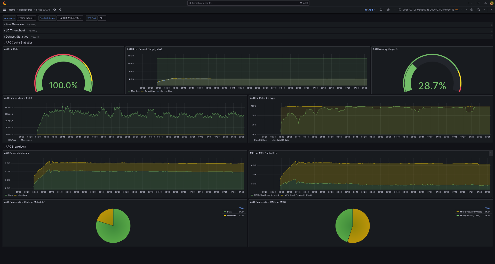
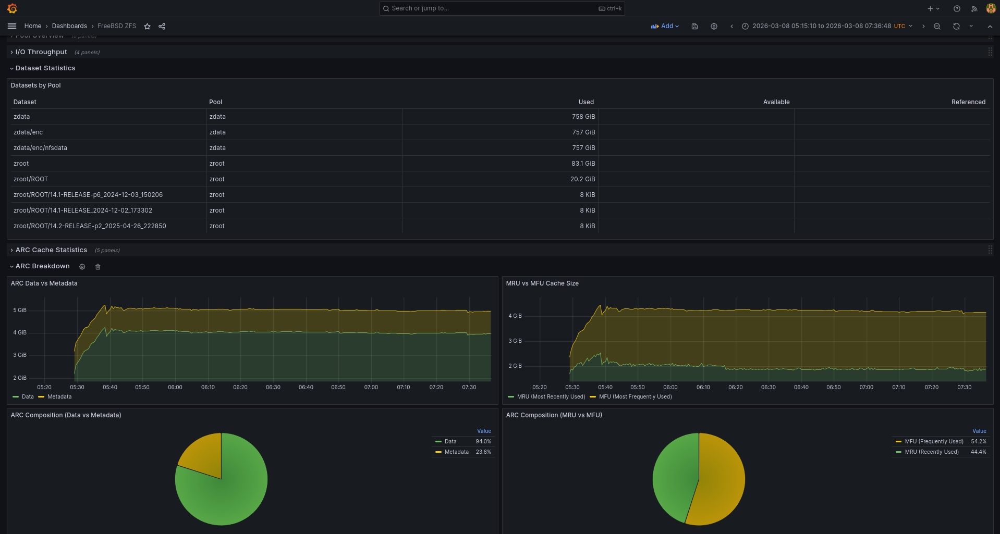

f3s: Kubernetes with FreeBSD - Part 8: Observability
Published at 2025-12-06T23:58:24+02:00, last updated Mon 09 Mar 09:33:08 EET 2026
This is the 8th blog post about the f3s series for my self-hosting demands in a home lab. f3s? The "f" stands for FreeBSD, and the "3s" stands for k3s, the Kubernetes distribution I use on FreeBSD-based physical machines.
2024-11-17 f3s: Kubernetes with FreeBSD - Part 1: Setting the stage
2024-12-03 f3s: Kubernetes with FreeBSD - Part 2: Hardware and base installation
2025-02-01 f3s: Kubernetes with FreeBSD - Part 3: Protecting from power cuts
2025-04-05 f3s: Kubernetes with FreeBSD - Part 4: Rocky Linux Bhyve VMs
2025-05-11 f3s: Kubernetes with FreeBSD - Part 5: WireGuard mesh network
2025-07-14 f3s: Kubernetes with FreeBSD - Part 6: Storage
2025-10-02 f3s: Kubernetes with FreeBSD - Part 7: k3s and first pod deployments
2025-12-07 f3s: Kubernetes with FreeBSD - Part 8: Observability (You are currently reading this)
2025-12-14 f3s: Kubernetes with FreeBSD - Part 8b: Distributed Tracing with Tempo
2026-04-02 f3s: Kubernetes with FreeBSD - Part 9: GitOps with ArgoCD
2026-09-01 f3s: Kubernetes with FreeBSD - Part 10: A New Home
Table of Contents
Introduction
In this blog post, I set up an observability stack for the k3s cluster, so I can see what's going on inside it. Five components, all in the monitoring namespace:
- Prometheus: time-series database for metrics collection and alerting
- Grafana: visualisation and dashboarding frontend
- Loki: log aggregation system (like Prometheus, but for logs)
- Alloy: telemetry collector that ships logs and traces from all pods to Loki and Tempo
- Tempo: distributed tracing backend for request flow analysis across microservices
That's the "PLG" stack (Prometheus, Loki, Grafana) plus Tempo.
All manifests for the f3s stack live in my configuration repository:
github.com/snonux/conf/f3s
Important Note: GitOps Migration
Note: After publishing this post, I migrated the f3s cluster from imperative Helm deployments to GitOps with ArgoCD, and reorganised the manifests, Helm charts and Justfiles in the repository for that.
To see the configuration as it was when I wrote this post, check out the pre-ArgoCD revision:
$ git clone https://github.com/snonux/conf.git
$ cd conf
$ git checkout 15a86f3 # Last commit before ArgoCD migration
$ cd f3s/prometheus/
The current master branch contains the ArgoCD-managed versions with:
- Application manifests organized under argocd-apps/{monitoring,services,infra,test}/
- Resources organized under prometheus/manifests/, loki/, etc.
- Justfiles updated to trigger ArgoCD syncs instead of direct Helm commands
The concepts are the same, only the deployment method changed from imperative (helm install/upgrade) to declarative (GitOps with ArgoCD).
Persistent storage recap
All observability components need persistent storage so that metrics and logs survive pod restarts. As covered in Part 6 of this series, the cluster uses NFS-backed persistent volumes:
f3s: Kubernetes with FreeBSD - Part 6: Storage
The FreeBSD hosts (f0, f1) serve as master-standby NFS servers, exporting ZFS datasets that are replicated across hosts using zrepl. The Rocky Linux k3s nodes (r0, r1, r2) mount these exports at /data/nfs/k3svolumes. This directory contains subdirectories for each application that needs persistent storage—including Prometheus, Grafana, and Loki.
For example, the observability stack uses these paths on the NFS share:
- /data/nfs/k3svolumes/prometheus/data — Prometheus time-series database
- /data/nfs/k3svolumes/grafana/data — Grafana configuration, dashboards, and plugins
- /data/nfs/k3svolumes/loki/data — Loki log chunks and index
- /data/nfs/k3svolumes/tempo/data — Tempo trace data and WAL
Each path gets a corresponding PersistentVolume and PersistentVolumeClaim in Kubernetes, allowing pods to mount them as regular volumes. Because the underlying storage is ZFS with replication, we get snapshots and redundancy for free.
The monitoring namespace
First, I created the monitoring namespace where all observability components will live:
$ kubectl create namespace monitoring
namespace/monitoring created
Installing Prometheus and Grafana
Prometheus and Grafana are deployed together using the kube-prometheus-stack Helm chart from the Prometheus community. This chart bundles Prometheus, Grafana, Alertmanager, and various exporters (Node Exporter, Kube State Metrics) into a single deployment. Ill explain what each component does in detail later when we look at the running pods.
Prerequisites
Add the Prometheus Helm chart repository:
$ helm repo add prometheus-community https://prometheus-community.github.io/helm-charts
$ helm repo update
Create the directories on the NFS server for persistent storage:
[root@r0 ~]# mkdir -p /data/nfs/k3svolumes/prometheus/data
[root@r0 ~]# mkdir -p /data/nfs/k3svolumes/grafana/data
Deploying with the Justfile
The configuration repository contains a Justfile that automates the deployment. just is a handy command runner—think of it as a simpler, more modern alternative to make. I use it throughout the f3s repository to wrap repetitive Helm and kubectl commands:
just - A handy way to save and run project-specific commands
github.com/snonux/conf/f3s/prometheus
To install everything:
$ cd conf/f3s/prometheus
$ just install
kubectl apply -f persistent-volumes.yaml
persistentvolume/prometheus-data-pv created
persistentvolume/grafana-data-pv created
persistentvolumeclaim/grafana-data-pvc created
helm install prometheus prometheus-community/kube-prometheus-stack \
--namespace monitoring -f persistence-values.yaml
NAME: prometheus
LAST DEPLOYED: ...
NAMESPACE: monitoring
STATUS: deployed
persistence-values.yaml points Prometheus and Grafana at the NFS-backed volumes from above. It also enables scraping of etcd and kube-controller-manager metrics:
kubeEtcd:
enabled: true
endpoints:
- 192.168.2.120
- 192.168.2.121
- 192.168.2.122
service:
enabled: true
port: 2381
targetPort: 2381
kubeControllerManager:
enabled: true
endpoints:
- 192.168.2.120
- 192.168.2.121
- 192.168.2.122
service:
enabled: true
port: 10257
targetPort: 10257
serviceMonitor:
enabled: true
https: true
insecureSkipVerify: true
By default, k3s binds the controller-manager to localhost only and doesn't expose etcd metrics, so the "Kubernetes / Controller Manager" and "etcd" dashboards in Grafana will show no data. To fix both, add the following to /etc/rancher/k3s/config.yaml on each k3s server node:
[root@r0 ~]# cat >> /etc/rancher/k3s/config.yaml << 'EOF'
kube-controller-manager-arg:
- bind-address=0.0.0.0
etcd-expose-metrics: true
EOF
[root@r0 ~]# systemctl restart k3s
Repeat for r1 and r2. After restarting all nodes, the controller-manager metrics endpoint will be accessible and etcd metrics are available on port 2381. Prometheus can now scrape both.
Verify etcd metrics are exposed:
[root@r0 ~]# curl -s http://127.0.0.1:2381/metrics | grep etcd_server_has_leader
etcd_server_has_leader 1
The full persistence-values.yaml and all other Prometheus configuration files are available on GitHub:
github.com/snonux/conf/f3s/prometheus
The persistent volume definitions bind to specific paths on the NFS share using hostPath volumes—the same pattern used for other services in Part 7:
f3s: Kubernetes with FreeBSD - Part 7: k3s and first pod deployments
Exposing Grafana via ingress
The chart also deploys an ingress for Grafana, making it accessible at grafana.f3s.foo.zone. The ingress configuration follows the same pattern as other services in the cluster—Traefik handles the routing internally, while the OpenBSD edge relays terminate TLS and forward traffic through WireGuard.
Once deployed, Grafana is accessible and comes pre-configured with Prometheus as a data source. You can verify the Prometheus service is running:
$ kubectl get svc -n monitoring prometheus-kube-prometheus-prometheus
NAME TYPE CLUSTER-IP PORT(S)
prometheus-kube-prometheus-prometheus ClusterIP 10.43.152.163 9090/TCP,8080/TCP
Grafana connects to Prometheus using the internal service URL http://prometheus-kube-prometheus-prometheus.monitoring.svc.cluster.local:9090. The default Grafana credentials are admin/prom-operator, which should be changed immediately after first login.



Installing Loki and Alloy
While Prometheus handles metrics, Loki handles logs. It only indexes the labels, not the log contents, so it's cheap on storage.
Alloy is Grafana's telemetry collector (the successor to Promtail). It runs as a DaemonSet on each node, tails container logs, and ships them to Loki.
Prerequisites
Create the data directory on the NFS server:
[root@r0 ~]# mkdir -p /data/nfs/k3svolumes/loki/data
Deploying Loki and Alloy
The Loki configuration also lives in the repository:
github.com/snonux/conf/f3s/loki
To install:
$ cd conf/f3s/loki
$ just install
helm repo add grafana https://grafana.github.io/helm-charts || true
helm repo update
kubectl apply -f persistent-volumes.yaml
persistentvolume/loki-data-pv created
persistentvolumeclaim/loki-data-pvc created
helm install loki grafana/loki --namespace monitoring -f values.yaml
NAME: loki
LAST DEPLOYED: ...
NAMESPACE: monitoring
STATUS: deployed
...
helm install alloy grafana/alloy --namespace monitoring -f alloy-values.yaml
NAME: alloy
LAST DEPLOYED: ...
NAMESPACE: monitoring
STATUS: deployed
Loki runs in single-binary mode with a single replica (loki-0), which is appropriate for a home lab cluster. This means there's only one Loki pod running at any time. If the node hosting Loki fails, Kubernetes will automatically reschedule the pod to another worker node—but there will be a brief downtime (typically under a minute) while this happens. Fine for a home lab.
For full high-availability, you'd deploy Loki in microservices mode with separate read, write, and backend components, backed by object storage like S3 or MinIO instead of local filesystem storage. Maybe in a future post. For now, single-binary mode on NFS is good enough.
Configuring Alloy
Alloy is configured via alloy-values.yaml to discover all pods in the cluster and forward their logs to Loki:
discovery.kubernetes "pods" {
role = "pod"
}
discovery.relabel "pods" {
targets = discovery.kubernetes.pods.targets
rule {
source_labels = ["__meta_kubernetes_namespace"]
target_label = "namespace"
}
rule {
source_labels = ["__meta_kubernetes_pod_name"]
target_label = "pod"
}
rule {
source_labels = ["__meta_kubernetes_pod_container_name"]
target_label = "container"
}
rule {
source_labels = ["__meta_kubernetes_pod_label_app"]
target_label = "app"
}
}
loki.source.kubernetes "pods" {
targets = discovery.relabel.pods.output
forward_to = [loki.write.default.receiver]
}
loki.write "default" {
endpoint {
url = "http://loki.monitoring.svc.cluster.local:3100/loki/api/v1/push"
}
}
This configuration automatically labels each log line with the namespace, pod name, container name, and app label, making it easy to filter logs in Grafana.
Adding Loki as a Grafana data source
Loki doesn't have its own web UI—you query it through Grafana. First, verify the Loki service is running:
$ kubectl get svc -n monitoring loki
NAME TYPE CLUSTER-IP PORT(S)
loki ClusterIP 10.43.64.60 3100/TCP,9095/TCP
To add Loki as a data source in Grafana:
- Navigate to Configuration → Data Sources
- Click "Add data source"
- Select "Loki"
- Set the URL to: http://loki.monitoring.svc.cluster.local:3100
- Click "Save & Test"
Once configured, you can explore logs in Grafana's "Explore" view. I'll show some example queries in the "Using the observability stack" section below.

The complete monitoring stack
After deploying everything, here's what's running in the monitoring namespace:
$ kubectl get pods -n monitoring
NAME READY STATUS RESTARTS AGE
alertmanager-prometheus-kube-prometheus-alertmanager-0 2/2 Running 0 42d
alloy-g5fgj 2/2 Running 0 29m
alloy-nfw8w 2/2 Running 0 29m
alloy-tg9vj 2/2 Running 0 29m
loki-0 2/2 Running 0 25m
prometheus-grafana-868f9dc7cf-lg2vl 3/3 Running 0 42d
prometheus-kube-prometheus-operator-8d7bbc48c-p4sf4 1/1 Running 0 42d
prometheus-kube-state-metrics-7c5fb9d798-hh2fx 1/1 Running 0 42d
prometheus-prometheus-kube-prometheus-prometheus-0 2/2 Running 0 42d
prometheus-prometheus-node-exporter-2nsg9 1/1 Running 0 42d
prometheus-prometheus-node-exporter-mqr25 1/1 Running 0 42d
prometheus-prometheus-node-exporter-wp4ds 1/1 Running 0 42d
tempo-0 1/1 Running 0 1d
Note: Tempo (tempo-0) is deployed later in this post in the "Distributed Tracing with Grafana Tempo" section. It is included in the pod listing here for completeness.
And the services:
$ kubectl get svc -n monitoring
NAME TYPE CLUSTER-IP PORT(S)
alertmanager-operated ClusterIP None 9093/TCP,9094/TCP
alloy ClusterIP 10.43.74.14 12345/TCP
loki ClusterIP 10.43.64.60 3100/TCP,9095/TCP
loki-headless ClusterIP None 3100/TCP
prometheus-grafana ClusterIP 10.43.46.82 80/TCP
prometheus-kube-prometheus-alertmanager ClusterIP 10.43.208.43 9093/TCP,8080/TCP
prometheus-kube-prometheus-operator ClusterIP 10.43.246.121 443/TCP
prometheus-kube-prometheus-prometheus ClusterIP 10.43.152.163 9090/TCP,8080/TCP
prometheus-kube-state-metrics ClusterIP 10.43.64.26 8080/TCP
prometheus-prometheus-node-exporter ClusterIP 10.43.127.242 9100/TCP
tempo ClusterIP 10.43.91.44 3200/TCP,4317/TCP,4318/TCP
Let me break down what each pod does:
- alertmanager-prometheus-kube-prometheus-alertmanager-0: the Alertmanager instance that receives alerts from Prometheus, deduplicates them, groups related alerts together, and routes notifications to the appropriate receivers (email, Slack, PagerDuty, etc.). It runs as a StatefulSet with persistent storage for silences and notification state.
- alloy-g5fgj, alloy-nfw8w, alloy-tg9vj: three Alloy pods running as a DaemonSet, one on each k3s node. Each pod tails the container logs from its local node via the Kubernetes API and forwards them to Loki.
- loki-0: the single Loki instance running in single-binary mode. It receives log streams from Alloy, stores them in chunks on the NFS-backed persistent volume, and serves queries from Grafana. The -0 suffix indicates it's a StatefulSet pod.
- prometheus-grafana-...: the Grafana web interface for visualising metrics and logs. It comes pre-configured with Prometheus as a data source and includes dozens of dashboards for Kubernetes monitoring. Dashboards, users, and settings are persisted to the NFS share.
- prometheus-kube-prometheus-operator-...: the Prometheus Operator that watches for custom resources (ServiceMonitor, PodMonitor, PrometheusRule) and automatically configures Prometheus to scrape new targets. This allows applications to declare their own monitoring requirements.
- prometheus-kube-state-metrics-...: generates metrics about the state of Kubernetes objects themselves: how many pods are running, pending, or failed; deployment replica counts; node conditions; PVC status; and more.
- prometheus-prometheus-kube-prometheus-prometheus-0: the Prometheus server that scrapes metrics from all configured targets (pods, services, nodes), stores them in a time-series database, evaluates alerting rules, and serves queries to Grafana.
- prometheus-prometheus-node-exporter-...: three Node Exporter pods running as a DaemonSet, one on each node. They expose hardware and OS-level metrics: CPU usage, memory, disk I/O, filesystem usage, network statistics, and more. These feed the "Node Exporter" dashboards in Grafana.
- tempo-0: the Grafana Tempo instance for distributed tracing. It receives trace data from Alloy via OTLP (OpenTelemetry Protocol), stores traces on the NFS-backed persistent volume, and serves queries to Grafana. Tempo is covered in detail in the "Distributed Tracing with Grafana Tempo" section later in this post.
Using the observability stack
Viewing metrics in Grafana
The kube-prometheus-stack comes with many pre-built dashboards. Some useful ones include:
- Kubernetes / Compute Resources / Cluster: overview of CPU and memory usage across the cluster
- Kubernetes / Compute Resources / Namespace (Pods): resource usage by namespace
- Node Exporter / Nodes: detailed host metrics like disk I/O, network, and CPU
Querying logs with LogQL
In Grafana's Explore view, select Loki as the data source and try queries like:
# All logs from the services namespace
{namespace="services"}
# Logs from pods matching a pattern
{pod=~"miniflux.*"}
# Filter by log content
{namespace="services"} |= "error"
# Parse JSON logs and filter
{namespace="services"} | json | level="error"
Creating alerts
Prometheus supports alerting rules that can notify you when something goes wrong. The kube-prometheus-stack includes many default alerts for common issues like high CPU usage, pod crashes, and node problems. These can be customised via PrometheusRule CRDs.
Monitoring external FreeBSD hosts
The observability stack can also monitor servers outside the Kubernetes cluster. The FreeBSD hosts (f0, f1, f2) that serve NFS storage can be added to Prometheus using the Node Exporter.
Installing Node Exporter on FreeBSD
On each FreeBSD host, install the node_exporter package:
paul@f0:~ % doas pkg install -y node_exporter
Enable the service to start at boot:
paul@f0:~ % doas sysrc node_exporter_enable=YES
node_exporter_enable: -> YES
Configure node_exporter to listen on the WireGuard interface. This ensures metrics are only accessible through the secure tunnel, not the public network. Replace the IP with the host's WireGuard address:
paul@f0:~ % doas sysrc node_exporter_args='--web.listen-address=192.168.2.130:9100'
node_exporter_args: -> --web.listen-address=192.168.2.130:9100
Start the service:
paul@f0:~ % doas service node_exporter start
Starting node_exporter.
Verify it's running:
paul@f0:~ % curl -s http://192.168.2.130:9100/metrics | head -3
# HELP go_gc_duration_seconds A summary of the wall-time pause...
# TYPE go_gc_duration_seconds summary
go_gc_duration_seconds{quantile="0"} 0
Repeat for the other FreeBSD hosts (f1, f2) with their respective WireGuard IPs.
Adding FreeBSD hosts to Prometheus
Create a file additional-scrape-configs.yaml in the prometheus configuration directory:
- job_name: 'node-exporter'
static_configs:
- targets:
- '192.168.2.130:9100' # f0 via WireGuard
- '192.168.2.131:9100' # f1 via WireGuard
- '192.168.2.132:9100' # f2 via WireGuard
labels:
os: freebsd
The job_name must be node-exporter to match the existing dashboards. The os: freebsd label allows filtering these hosts separately if needed.
Create a Kubernetes secret from this file:
$ kubectl create secret generic additional-scrape-configs \
--from-file=additional-scrape-configs.yaml \
-n monitoring
Update persistence-values.yaml to reference the secret:
prometheus:
prometheusSpec:
additionalScrapeConfigsSecret:
enabled: true
name: additional-scrape-configs
key: additional-scrape-configs.yaml
Upgrade the Prometheus deployment:
$ just upgrade
After a minute or so, the FreeBSD hosts appear in the Prometheus targets and in the Node Exporter dashboards in Grafana.

FreeBSD memory metrics compatibility
The default Node Exporter dashboards are designed for Linux and expect metrics like node_memory_MemAvailable_bytes. FreeBSD uses different metric names (node_memory_size_bytes, node_memory_free_bytes, etc.), so memory panels will show "No data" out of the box.
To fix this, I created a PrometheusRule that generates synthetic Linux-compatible metrics from the FreeBSD equivalents:
apiVersion: monitoring.coreos.com/v1
kind: PrometheusRule
metadata:
name: freebsd-memory-rules
namespace: monitoring
labels:
release: prometheus
spec:
groups:
- name: freebsd-memory
rules:
- record: node_memory_MemTotal_bytes
expr: node_memory_size_bytes{os="freebsd"}
- record: node_memory_MemAvailable_bytes
expr: |
node_memory_free_bytes{os="freebsd"}
+ node_memory_inactive_bytes{os="freebsd"}
+ node_memory_cache_bytes{os="freebsd"}
- record: node_memory_MemFree_bytes
expr: node_memory_free_bytes{os="freebsd"}
- record: node_memory_Buffers_bytes
expr: node_memory_buffer_bytes{os="freebsd"}
- record: node_memory_Cached_bytes
expr: node_memory_cache_bytes{os="freebsd"}
This file is saved as freebsd-recording-rules.yaml and applied as part of the Prometheus installation. The os="freebsd" label (set in the scrape config) ensures these rules only apply to FreeBSD hosts. After applying, the memory panels in the Node Exporter dashboards populate correctly for FreeBSD.
freebsd-recording-rules.yaml on GitHub
Disk I/O metrics limitation
Unlike memory metrics, disk I/O metrics (node_disk_read_bytes_total, node_disk_written_bytes_total, etc.) are not available on FreeBSD. The Linux diskstats collector that provides these metrics doesn't have a FreeBSD equivalent in the node_exporter.
The disk I/O panels in the Node Exporter dashboards will show "No data" for FreeBSD hosts. FreeBSD does expose ZFS-specific metrics (node_zfs_arcstats_*) for ARC cache performance, and per-dataset I/O stats are available via sysctl kstat.zfs, but mapping these to the Linux-style metrics the dashboards expect is non-trivial. To address this, I created custom ZFS-specific dashboards, covered in the next section.
ZFS Monitoring for FreeBSD Servers
The FreeBSD servers (f0, f1, f2) that provide NFS storage to the k3s cluster have ZFS filesystems. I also want to see how ZFS and its cache are doing.
Node Exporter ZFS Collector
The node_exporter running on each FreeBSD server (v1.9.1) includes a built-in ZFS collector that exposes metrics via sysctls. The ZFS collector is enabled by default and provides:
- ARC (Adaptive Replacement Cache) statistics
- Cache hit/miss rates
- Memory usage and allocation
- MRU/MFU cache breakdown
- Data vs metadata distribution
Verifying ZFS Metrics
On any FreeBSD server, check that ZFS metrics are being exposed:
paul@f0:~ % curl -s http://localhost:9100/metrics | grep node_zfs_arcstats | wc -l
69
The metrics are automatically scraped by Prometheus through the existing static configuration in additional-scrape-configs.yaml which targets all FreeBSD servers on port 9100 with the os: freebsd label.
ZFS Recording Rules
I added recording rules in zfs-recording-rules.yaml so the dashboards get simpler:
apiVersion: monitoring.coreos.com/v1
kind: PrometheusRule
metadata:
name: freebsd-zfs-rules
namespace: monitoring
labels:
release: prometheus
spec:
groups:
- name: freebsd-zfs-arc
interval: 30s
rules:
- record: node_zfs_arc_hit_rate_percent
expr: |
100 * (
rate(node_zfs_arcstats_hits_total{os="freebsd"}[5m]) /
(rate(node_zfs_arcstats_hits_total{os="freebsd"}[5m]) +
rate(node_zfs_arcstats_misses_total{os="freebsd"}[5m]))
)
labels:
os: freebsd
- record: node_zfs_arc_memory_usage_percent
expr: |
100 * (
node_zfs_arcstats_size_bytes{os="freebsd"} /
node_zfs_arcstats_c_max_bytes{os="freebsd"}
)
labels:
os: freebsd
# Additional rules for metadata %, target %, MRU/MFU %, etc.
These recording rules calculate:
- ARC hit rate percentage
- ARC memory usage percentage (current vs maximum)
- ARC target percentage (target vs maximum)
- Metadata vs data percentages
- MRU vs MFU cache percentages
- Demand data and metadata hit rates
Grafana Dashboards
I made two ZFS dashboards (zfs-dashboards.yaml):
The first one is per host: pool capacity and health, a dataset table, and ARC stats (hit rate, size, data vs metadata). The second one aggregates the same across all three hosts. Screenshots:



Deployment
Then I applied them:
cd /home/paul/git/conf/f3s/prometheus
kubectl apply -f zfs-recording-rules.yaml
kubectl apply -f zfs-dashboards.yaml
And added them to the Justfile:
install:
kubectl apply -f persistent-volumes.yaml
kubectl create secret generic additional-scrape-configs --from-file=additional-scrape-configs.yaml -n monitoring --dry-run=client -o yaml | kubectl apply -f -
helm install prometheus prometheus-community/kube-prometheus-stack --namespace monitoring -f persistence-values.yaml
kubectl apply -f freebsd-recording-rules.yaml
kubectl apply -f openbsd-recording-rules.yaml
kubectl apply -f zfs-recording-rules.yaml
just -f grafana-ingress/Justfile install
Verifying ZFS Metrics in Prometheus
Check that ZFS metrics are being collected:
kubectl exec -n monitoring prometheus-prometheus-kube-prometheus-prometheus-0 -c prometheus -- \
wget -qO- 'http://localhost:9090/api/v1/query?query=node_zfs_arcstats_size_bytes'
Check recording rules are calculating correctly:
kubectl exec -n monitoring prometheus-prometheus-kube-prometheus-prometheus-0 -c prometheus -- \
wget -qO- 'http://localhost:9090/api/v1/query?query=node_zfs_arc_memory_usage_percent'
Example output shows memory usage percentage for each FreeBSD server:
"result":[
{"metric":{"instance":"192.168.2.130:9100","os":"freebsd"},"value":[...,"37.58"]},
{"metric":{"instance":"192.168.2.131:9100","os":"freebsd"},"value":[...,"12.85"]},
{"metric":{"instance":"192.168.2.132:9100","os":"freebsd"},"value":[...,"13.44"]}
]
What I actually look at
ARC hit rate (should be above 90%), pool capacity (ZFS gets slow above 80%), and pool health (anything but ONLINE means a disk problem).
ZFS Pool and Dataset Metrics via Textfile Collector
node_exporter's ZFS collector only covers the ARC, so I added pool capacity and dataset sizes via the textfile collector.
The script, /usr/local/bin/zfs_pool_metrics.sh on each FreeBSD server:
#!/bin/sh
# ZFS Pool and Dataset Metrics Collector for Prometheus
OUTPUT_FILE="/var/tmp/node_exporter/zfs_pools.prom.$$"
FINAL_FILE="/var/tmp/node_exporter/zfs_pools.prom"
mkdir -p /var/tmp/node_exporter
{
# Pool metrics
echo "# HELP zfs_pool_size_bytes Total size of ZFS pool"
echo "# TYPE zfs_pool_size_bytes gauge"
echo "# HELP zfs_pool_allocated_bytes Allocated space in ZFS pool"
echo "# TYPE zfs_pool_allocated_bytes gauge"
echo "# HELP zfs_pool_free_bytes Free space in ZFS pool"
echo "# TYPE zfs_pool_free_bytes gauge"
echo "# HELP zfs_pool_capacity_percent Capacity percentage"
echo "# TYPE zfs_pool_capacity_percent gauge"
echo "# HELP zfs_pool_health Pool health (0=ONLINE, 1=DEGRADED, 2=FAULTED)"
echo "# TYPE zfs_pool_health gauge"
zpool list -Hp -o name,size,allocated,free,capacity,health | \
while IFS=$'\t' read name size alloc free cap health; do
case "$health" in
ONLINE) health_val=0 ;;
DEGRADED) health_val=1 ;;
FAULTED) health_val=2 ;;
*) health_val=6 ;;
esac
cap_num=$(echo "$cap" | sed 's/%//')
echo "zfs_pool_size_bytes{pool=\"$name\"} $size"
echo "zfs_pool_allocated_bytes{pool=\"$name\"} $alloc"
echo "zfs_pool_free_bytes{pool=\"$name\"} $free"
echo "zfs_pool_capacity_percent{pool=\"$name\"} $cap_num"
echo "zfs_pool_health{pool=\"$name\"} $health_val"
done
# Dataset metrics
echo "# HELP zfs_dataset_used_bytes Used space in dataset"
echo "# TYPE zfs_dataset_used_bytes gauge"
echo "# HELP zfs_dataset_available_bytes Available space"
echo "# TYPE zfs_dataset_available_bytes gauge"
echo "# HELP zfs_dataset_referenced_bytes Referenced space"
echo "# TYPE zfs_dataset_referenced_bytes gauge"
zfs list -Hp -t filesystem -o name,used,available,referenced | \
while IFS=$'\t' read name used avail ref; do
pool=$(echo "$name" | cut -d/ -f1)
echo "zfs_dataset_used_bytes{pool=\"$pool\",dataset=\"$name\"} $used"
echo "zfs_dataset_available_bytes{pool=\"$pool\",dataset=\"$name\"} $avail"
echo "zfs_dataset_referenced_bytes{pool=\"$pool\",dataset=\"$name\"} $ref"
done
} > "$OUTPUT_FILE"
mv "$OUTPUT_FILE" "$FINAL_FILE"
Copied to all FreeBSD servers:
for host in f0 f1 f2; do
scp /tmp/zfs_pool_metrics.sh paul@$host:/tmp/
ssh paul@$host 'doas mv /tmp/zfs_pool_metrics.sh /usr/local/bin/ && \
doas chmod +x /usr/local/bin/zfs_pool_metrics.sh'
done
Set up cron jobs to run every minute:
for host in f0 f1 f2; do
ssh paul@$host 'echo "* * * * * /usr/local/bin/zfs_pool_metrics.sh >/dev/null 2>&1" | \
doas crontab -'
done
The textfile collector (already configured with --collector.textfile.directory=/var/tmp/node_exporter) automatically picks up the metrics.
Verify metrics are being exposed:
paul@f0:~ % curl -s http://localhost:9100/metrics | grep "^zfs_pool" | head -5
zfs_pool_allocated_bytes{pool="zdata"} 6.47622733824e+11
zfs_pool_allocated_bytes{pool="zroot"} 5.3338578944e+10
zfs_pool_capacity_percent{pool="zdata"} 64
zfs_pool_capacity_percent{pool="zroot"} 10
zfs_pool_free_bytes{pool="zdata"} 3.48809678848e+11
All ZFS-related configuration files are available on GitHub:
zfs-recording-rules.yaml on GitHub
zfs-dashboards.yaml on GitHub
Monitoring external OpenBSD hosts
The same approach works for OpenBSD hosts. I have two OpenBSD edge relay servers (blowfish, fishfinger) that handle TLS termination and forward traffic through WireGuard to the cluster. These can also be monitored with Node Exporter.
Installing Node Exporter on OpenBSD
On each OpenBSD host, install the node_exporter package:
blowfish:~ $ doas pkg_add node_exporter
quirks-7.103 signed on 2025-10-13T22:55:16Z
The following new rcscripts were installed: /etc/rc.d/node_exporter
See rcctl(8) for details.
Enable the service to start at boot:
blowfish:~ $ doas rcctl enable node_exporter
Configure node_exporter to listen on the WireGuard interface. This ensures metrics are only accessible through the secure tunnel, not the public network. Replace the IP with the host's WireGuard address:
blowfish:~ $ doas rcctl set node_exporter flags '--web.listen-address=192.168.2.110:9100'
Start the service:
blowfish:~ $ doas rcctl start node_exporter
node_exporter(ok)
Verify it's running:
blowfish:~ $ curl -s http://192.168.2.110:9100/metrics | head -3
# HELP go_gc_duration_seconds A summary of the wall-time pause...
# TYPE go_gc_duration_seconds summary
go_gc_duration_seconds{quantile="0"} 0
Repeat for the other OpenBSD host (fishfinger) with its respective WireGuard IP (192.168.2.111).
Adding OpenBSD hosts to Prometheus
Update additional-scrape-configs.yaml to include the OpenBSD targets:
- job_name: 'node-exporter'
static_configs:
- targets:
- '192.168.2.130:9100' # f0 via WireGuard
- '192.168.2.131:9100' # f1 via WireGuard
- '192.168.2.132:9100' # f2 via WireGuard
labels:
os: freebsd
- targets:
- '192.168.2.110:9100' # blowfish via WireGuard
- '192.168.2.111:9100' # fishfinger via WireGuard
labels:
os: openbsd
The os: openbsd label allows filtering these hosts separately from FreeBSD and Linux nodes.
OpenBSD memory metrics compatibility
OpenBSD uses the same memory metric names as FreeBSD (node_memory_size_bytes, node_memory_free_bytes, etc.), so a similar PrometheusRule is needed to generate Linux-compatible metrics:
apiVersion: monitoring.coreos.com/v1
kind: PrometheusRule
metadata:
name: openbsd-memory-rules
namespace: monitoring
labels:
release: prometheus
spec:
groups:
- name: openbsd-memory
rules:
- record: node_memory_MemTotal_bytes
expr: node_memory_size_bytes{os="openbsd"}
labels:
os: openbsd
- record: node_memory_MemAvailable_bytes
expr: |
node_memory_free_bytes{os="openbsd"}
+ node_memory_inactive_bytes{os="openbsd"}
+ node_memory_cache_bytes{os="openbsd"}
labels:
os: openbsd
- record: node_memory_MemFree_bytes
expr: node_memory_free_bytes{os="openbsd"}
labels:
os: openbsd
- record: node_memory_Cached_bytes
expr: node_memory_cache_bytes{os="openbsd"}
labels:
os: openbsd
This file is saved as openbsd-recording-rules.yaml and applied alongside the FreeBSD rules. Note that OpenBSD doesn't expose a buffer memory metric, so that rule is omitted.
openbsd-recording-rules.yaml on GitHub
After running just upgrade, the OpenBSD hosts appear in Prometheus targets and the Node Exporter dashboards.
Summary
That's metrics and logs for the k3s cluster, the FreeBSD storage servers and the OpenBSD edge relays, all in Grafana. Next up: distributed tracing with Grafana Tempo.
Part 8b: Distributed Tracing with Tempo
All configuration files are available on GitHub:
Prometheus, Grafana, and recording rules configuration
Loki and Alloy configuration
Other *BSD-related posts:
2026-09-01 f3s: Kubernetes with FreeBSD - Part 10: A New Home
2026-04-02 f3s: Kubernetes with FreeBSD - Part 9: GitOps with ArgoCD
2025-12-14 f3s: Kubernetes with FreeBSD - Part 8b: Distributed Tracing with Tempo
2025-12-07 f3s: Kubernetes with FreeBSD - Part 8: Observability (You are currently reading this)
2025-10-02 f3s: Kubernetes with FreeBSD - Part 7: k3s and first pod deployments
2025-07-14 f3s: Kubernetes with FreeBSD - Part 6: Storage
2025-05-11 f3s: Kubernetes with FreeBSD - Part 5: WireGuard mesh network
2025-04-05 f3s: Kubernetes with FreeBSD - Part 4: Rocky Linux Bhyve VMs
2025-02-01 f3s: Kubernetes with FreeBSD - Part 3: Protecting from power cuts
2024-12-03 f3s: Kubernetes with FreeBSD - Part 2: Hardware and base installation
2024-11-17 f3s: Kubernetes with FreeBSD - Part 1: Setting the stage
2024-04-01 KISS high-availability with OpenBSD
2024-01-13 One reason why I love OpenBSD
2022-10-30 Installing DTail on OpenBSD
2022-07-30 Let's Encrypt with OpenBSD and Rex
2016-04-09 Jails and ZFS with Puppet on FreeBSD
E-Mail your comments to paul@nospam.buetow.org
Back to the main site